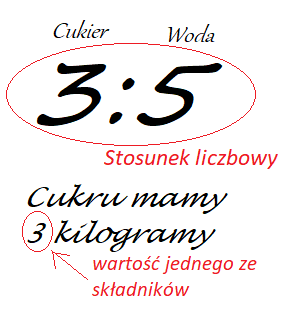

Stosunek to ilorazowe odniesienie wartości względem siebie. Np. zapis 2:3 oznacza dwie części pierwszej substanci i trzy części drugiej.
W życiu codzienny możemy spotkać sytuacje, gdzie substancje będą połączone proporcją, a konkretnie stosunkiem względem siebie np. 3:5.

Jednostką może być litr, może być kilogram lub całkiem coś innego. Ważne jest to, że obie substancje będą obliczane w takiej samej jednostce.
Trzy do czterech oznacza, że potrzebujemy trzy części pierwszej substancji i cztery części drugiej substancji. Czyli 3+4=7 mamy wszystkich części 7, to jest nasza całość. Załóżmy, że pierwszą substancją jest kolor czerwony, a drugą biały (np. farby, chcemy rozjaśnić naszą czerwoną farbę i dokupiliśmy dużą puszkę białej). Bierzemy naszą czerwoną farbę, chcemy ją całą rozmieszać, a białej mamy dużo więcej. Więc wlewamy najpier naszą czerwoną do mieszania. Jest jej 6 litrów. Teraz musimy policzyć ile dolać białej. 6 litrów to nasze 3 części. Więc 6:3=2 jedna część to 2 litry. Cztery części białej farby to 4*2=8 litrów farby. (Zdjęcia obok)
W zadaniach możemy też mieć żeby obliczyć stosunek dwóch substancji. Mamy wtedy podane ich ilośc (jeżeli są różne jednostki np. dag i kg to zamieniamy na takie same np. dag).
Przykład.
Wyznacz stosunek wielkości 50 cm i 0.3 m. Zamieniamy na takie same jednostki. Mamy 50 cm i 30 cm (łatwiej na mniejsze jednostki, wtedy nie mamy przecinków). Nasz stosunek to ilośc jednej substancji do drugiej czyli 50:30 ? Nie może to tak wyglądać, w stosunku chodzi o jak najmniejsze liczby określające stosunek, musi wyglądać przejrzyście. Więc możeby obustronnie podzielić przez 10 (lub skreślić zero jak ktoś woli). Mamy wtedy 5:3. Taki stosunek nas satysfakcjonuje.
Przykład 2.
1h i 20 min. Najpierw zamieniamy 1 godzinę na 60 min. Następnie zapisujemy 60:20. Dzielimy przez 10. Mamy 6:2. Ale możemy jeszcze podzielić przez dwa. Otrzymujemy 3:1. Od razu lepiej. Trzy części do jednej.